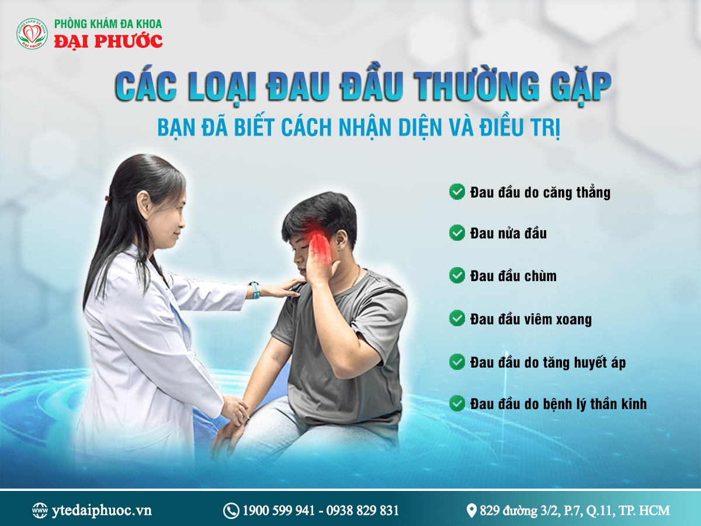

Các Loại Đau Đầu Thường Gặp – Biểu Hiện Và Cách Chữa Trị Hiệu Quả
Bạn từng cảm thấy đau đầu dai dẳng, đau nửa đầu hay nhức đầu khi thay đổi thời tiết? Từng loại nhức đầu sẽ có nguyên nhân, triệu chứng khác nhau, và việc hiểu rõ triệu chứng sẽ giúp bạn chọn cách giảm đau hiệu quả hơn.
Hãy cùng Phòng khám đa khoa Đại Phước tìm hiểu chi tiết để bảo vệ sức khỏe của bạn và cả người thân nhé!
1. Đau đầu nguyên phát
Đây thường là các kiểu đau dai dẳng, tái phát nhiều lần.
1.1. Đau đầu do căng thẳng (Tension Headache) - Biểu hiện và Cách Chữa trị
Biểu hiện:
- Người bệnh thường cảm giác đau căng, nhức ở hai bên đầu hoặc vùng trán, đau âm ỉ.
- Thường xảy ra khi căng thẳng, lo âu hoặc ngồi sai tư thế.
- Hiếm khi kèm theo buồn nôn hay nhạy cảm với ánh sáng.
Cách chữa trị:
- Dùng thuốc giảm đau: Paracetamol, Ibuprofen.
- Thư giãn với thiền, yoga, hoặc mát-xa.
- Uống nhiều nước và tránh stress.
1.2. Đau đầu Migraine (Đau nửa đầu) - Biểu hiện và Cách Chữa Trị
Biểu hiện:
-
Thường có yếu tố gia đình, nữ thường bị hơn nam.
-
Thường đau nửa đầu, cảm giác mạch đập 2 bên thái dương.
-
Nhạy cảm với ánh sáng, âm thanh, có thể kèm buồn nôn, mờ mắt.
-
Có thể xuất hiện từ vài giờ đến vài ngày.
Cách chữa trị:
-
Nghỉ ngơi trong không gian yên tĩnh, giảm ánh sáng.
-
Không ăn bột ngọt, không uống cà phê. Uống đủ nước.
-
Dùng thuốc giảm đau - cắt cơn: Ibuprofen, Naproxen.
-
Điều trị dự phòng: Flunarizine, Bisoprolol.
-
Dùng thuốc đặc trị: các thuốc nhóm Triptan.
1.3. Đau đầu chùm (Cluster Headache) - Biểu hiện và Cách Chữa Trị
Biểu hiện:
-
Thường có yếu tố gia đình, nam thường bị hơn nữ.
-
Đau quanh mắt, thái dương, thường xảy ra một bên.
-
Xảy ra theo đợt, kèm chảy nước mắt, nghẹt mũi.
Cách chữa trị:
-
Hít thở oxy 100% qua mặt nạ.
-
Dùng thuốc: Sumatriptan, Zolmitriptan.
2. Đau đầu thứ phát
Đây thường xảy ra do nguyên nhân khác, nên cơn đau thường đột ngột và người bệnh cảm giác khác những cơn đau trước đó.
2.1. Đau đầu do tăng huyết áp (Hypertension Headache) - Biểu hiện và Cách Chữa Trị
Biểu hiện:
-
Đau vùng sau gáy, lan lên đỉnh đầu.
-
Hoa mắt, chóng mặt, khó thở.
Cách chữa trị:
-
Kiểm soát huyết áp bằng thuốc: Amlodipine, Lisinopril.
-
Hạn chế muối, béo, tập thể dục.
2.2. Đau đầu do bệnh Tai Mũi Họng hoặc Mắt - Biểu hiện và Cách Chữa Trị
Biểu hiện:
-
Đau nhất vùng trán, hai bên mũi hoặc hốc mắt, đỏ mắt…
-
Đau nhiều hơn khi cúi xuống hoặc thay đổi tư thế.
-
Nghẹt mũi, chảy dịch, có thể kèm sốt.
-
Kèm nhìn mờ.
Cách Chữa trị:
-
Rửa mũi với nước muối sinh lý.
-
Dùng thuốc xịt mũi giảm viêm (Fluticasone, Mometasone).
-
Dùng kháng sinh theo chỉ định của bác sĩ.
2.3. Đau đầu do bệnh lý thần kinh (U não, tai biến mạch máu não, viêm màng não,...) - Biểu hiện và Cách Chữa Trị
Biểu hiện:
-
Xuất hiện đột ngột.
-
Nhức đầu sau khi hoạt động mạnh, gắng sức.
-
Nhức đầu khi hoạt động cơ miệng.
-
Cường độ gia tăng khi ho.
-
Nhức đầu đột ngột kèm theo các triệu chứng như cứng cổ, thay đổi ý thức…
Cách chữa trị:
-
Với những triệu chứng xuất hiện đột ngột, mức độ đau dữ dội, hoặc kiểu đau khác với những lần nhức đầu trước đó thì CẦN ĐƯỢC KHÁM NGAY.
Khi nào cần đi khám bác sĩ?
Bạn nên đến khám Bác sĩ nếu gặp phải các dấu hiệu sau đây:
-
Nhức đầu kèm mất ý thức, tê liệt, nói khó.
-
Đau đầu không giảm dù đã dùng thuốc.
-
Đau đầu kèm theo sốt cao, buồn nôn kéo dài.
Phòng khám Đa khoa Đại Phước có đội ngũ bác sĩ chuyên khoa giàu kinh nghiệm, sẵn sàng giúp bạn chẩn đoán và điều trị hiệu quả.
Đừng chủ quan! Kiểm tra sức khỏe định kỳ giúp phát hiện sớm nguyên nhân và điều trị kịp thời, tránh biến chứng nguy hiểm.
Đừng để cơn đau đầu ảnh hưởng đến cuộc sống của bạn. Hãy ĐẶT LỊCH KHÁM NGAY để được bác sĩ tư vấn và điều trị hiệu quả!
 Địa chỉ : 829 Đường 3/2, Phường 7, Quận 11, Thành phố Hồ Chí Minh
Địa chỉ : 829 Đường 3/2, Phường 7, Quận 11, Thành phố Hồ Chí Minh
☎ Hotline : 1900 599 941 – 0938 829 831
 Website : ytedaiphuoc.vn
Website : ytedaiphuoc.vn
Phòng khám đa khoa Đại Phước - Chăm sóc sức khỏe toàn diện, đồng hành cùng bạn!

Các tin khác


ĐĂNG KÝ NHẬN BẢN TIN

Phòng Khám Đa Khoa Đại Phước
- 829 đường 3 tháng 2, Phường Minh Phụng, Thành phố Hồ Chí Minh
- 1900 599 941 - 0938 829 831
- (028) 3955 7999
- info@ytedaiphuoc.vn
-

6:00 - 11:30 (Chủ Nhật)


GPKD số : 0312023683 cấp ngày: 29/10/2012 Bởi Sở Kế Hoạch và Đầu Tư TP.Hồ Chí Minh
Đại diện: Tống Nguyễn Diễm Hồng